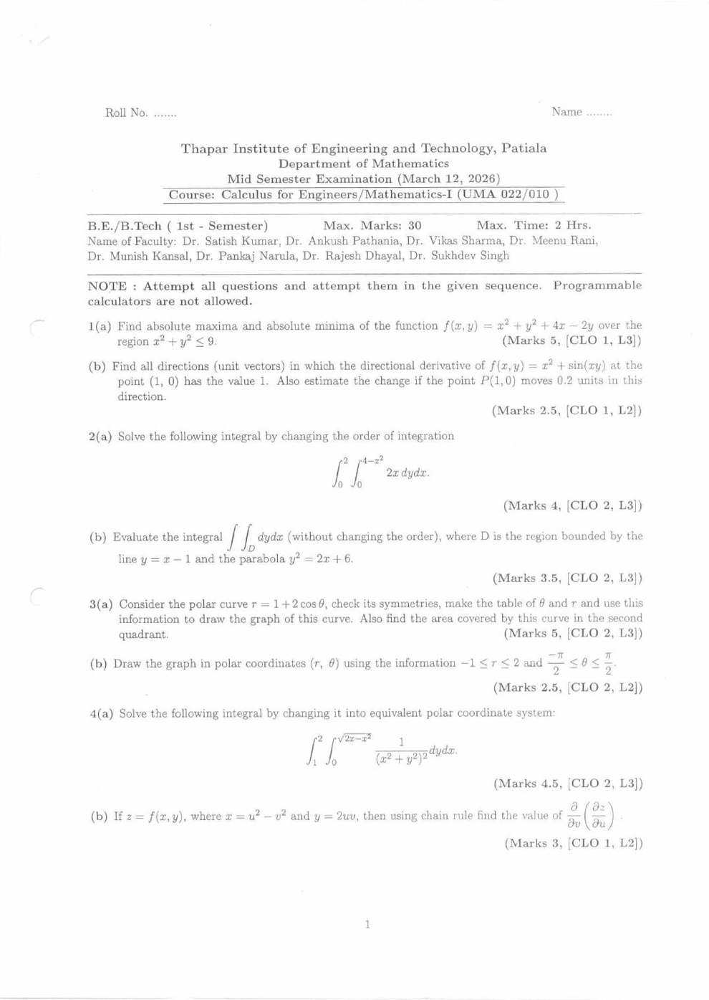
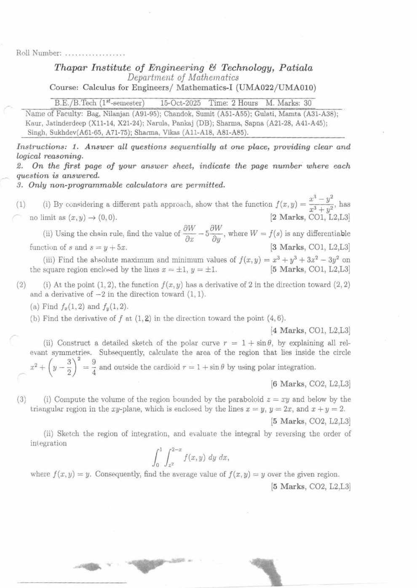
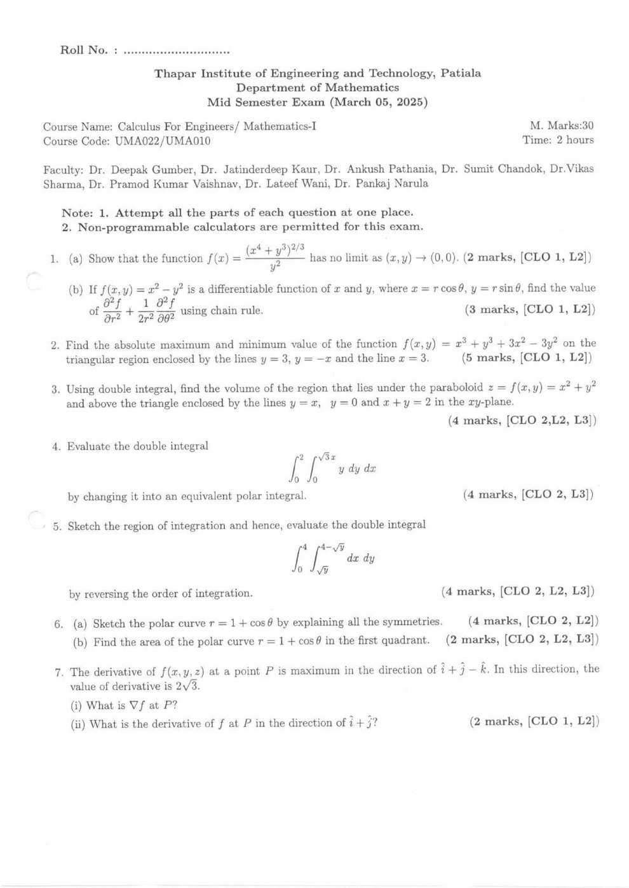

UMA010 — Mathematics-I MST Question Paper Analysis
Built from three actual MST papers — March 2025, October 2025, and March 2026 (Calculus for Engineers, UMA022/UMA010). Every number below is added up from the marks printed on those papers.
Before you rely on this: this analysis reflects the syllabus as it stood across these three papers. If your current semester's syllabus has added or dropped a topic, the weightage below will shift accordingly — always cross-check against this year's official syllabus first. With only three papers, treat the patterns as strong hints rather than guarantees.
Five topics appeared in all three papers — absolute max/min, polar curves, change of order, chain rule, and directional derivatives. Together they carried 72% of the marks.
1
Must-do topics — highest chance of coming
Every topic worth preparing, ranked by how reliably it has come up across the three papers. "Chance" here comes only from how often each topic appeared in past MSTs — it is not a guarantee about this year's paper.
Very high asked in every paperHigh asked in most papers
Polar curves — sketch & area
Very high
Asked in 3 of 3 papers5 questions19.5 marks in totalLast asked: Mar 2026
Mar 2025Oct 2025Mar 2026
Prepare: Sketch r = 1 + cos θ, 1 + sin θ and 1 + 2cos θ with symmetries and a table; area in a quadrant and between two curves.
The biggest topic in every paper.
Absolute maximum & minimum
Very high
Asked in 3 of 3 papers3 questions15 marks in totalLast asked: Mar 2026
Mar 2025Oct 2025Mar 2026
Prepare: Critical points, every boundary edge, and corners — on a disc, a square and a triangle.
Exactly 5 marks every time.
Change of order of integration
Very high
Asked in 3 of 3 papers3 questions13 marks in totalLast asked: Mar 2026
Mar 2025Oct 2025Mar 2026
Prepare: Sketch the region, then re-read the limits; split the region when needed.
Area / volume by double integral
Very high
Asked in 3 of 3 papers3 questions12.5 marks in totalLast asked: Mar 2026
Mar 2025Oct 2025Mar 2026
Prepare: Volume under a surface over a triangle, and area between a line and a parabola.
Partial derivatives & chain rule
Very high
Asked in 3 of 3 papers3 questions9 marks in totalLast asked: Mar 2026
Mar 2025Oct 2025Mar 2026
Prepare: First- and second-order chain rule, including the polar substitution.
Exactly 3 marks every time.
Directional derivative & gradient
Very high
Asked in 3 of 3 papers3 questions8.5 marks in totalLast asked: Mar 2026
Mar 2025Oct 2025Mar 2026
Prepare: Duf = ∇f · u both ways: find the derivative, or find ∇f / the direction from given derivatives.
Double integral in polar
High
Asked in 2 of 3 papers2 questions8.5 marks in totalLast asked: Mar 2026
Mar 2025Oct 2025Mar 2026
Prepare: Convert to polar with dx dy = r dr dθ, and spot circles hidden in the limits.
Limits — two-path test
High
Asked in 2 of 3 papers2 questions4 marks in totalLast asked: Oct 2025
Mar 2025Oct 2025Mar 2026
Prepare: Show a limit doesn't exist using two paths that give different values.
Only 2 marks, and it skipped the latest paper — quick to learn, so still worth it.
2
Year-wise paper analysis
Each paper on its own — what it covered, how it was built, and what was different about it. Newest first. All three are out of 30.
Polar curves were the biggest topic at 7.5 marks: trace r = 1 + 2cos θ with a symmetry check and a table of values, find its area in the second quadrant, then graph a region from limits on r and θ.
Double integrals took 12 marks in three styles: change of order, direct evaluation over the region between y = x − 1 and y² = 2x + 6, and conversion to polar.
No limit question this time.
The directional derivative ran in reverse: find all directions in which it equals 1, then estimate the change for a 0.2-unit move.
The most spread-out paper: seven short questions touching every topic.
Limit by two paths (2 marks) and a chain rule with the polar substitution x = r cos θ, y = r sin θ (3 marks).
Absolute max/min of x³ + y³ + 3x² − 3y² on a triangle.
Double integrals: volume under z = x² + y² over a triangle, polar conversion, and reversing the order with a sketch.
Polar curve r = 1 + cos θ: sketch with all symmetries (4) and area in the first quadrant (2).
A 3D gradient question: the maximum directional derivative and its direction give ∇f.
What stays the same across the three papers
The skeleton is fixed. Absolute max/min (always 5 marks), chain rule (always 3), a directional derivative, a change of order, and a polar curve appeared in all three — together 72% of the marks.
The polar curve is always from one family: r = 1 + cos θ, then r = 1 + sin θ, then r = 1 + 2cos θ. Its marks went 6 → 6 → 7.5.
Double integrals are the largest block at 10–12 marks every time.
Only three papers exist here, so treat these patterns as strong hints, not guarantees.
3
Repeated-topics heatmap
Every topic across all three papers at a glance. Each paper is out of 30.
Topic
Mar 2025 /30
Oct 2025 /30
Mar 2026 /30
Asked in
Limits (two-path test)
2
2
—
2/3
Partial derivatives & chain rule
3
3
3
3/3
Directional derivative & gradient
2
4
2.5
3/3
Absolute max/min
5
5
5
3/3
Change of order
4
5
4
3/3
Area / volume by double integral
4
5
3.5
3/3
Double integral in polar
4
—
4.5
2/3
Polar curves: sketch & area
6
6
7.5
3/3
Darker = bigger share of that paper's marks · number = marks
· not asked
4
Topic deep-dive — every repeated question, by year
Every topic, ordered by how much it's worth, with the actual question asked in each paper.
Absolute maximum & minimum
3 / 3 papers · 5 marks each
MAR 2026
Find the absolute maximum and minimum of f(x, y) = x² + y² + 4x − 2y over the disc x² + y² ≤ 9.
OCT 2025
Find the absolute maximum and minimum of f(x, y) = x³ + y³ + 3x² − 3y² on the square bounded by x = ±1, y = ±1.
MAR 2025
Find the absolute maximum and minimum of f(x, y) = x³ + y³ + 3x² − 3y² on the triangle bounded by y = 3, y = −x and x = 3.
Polar curves — sketch & area
3 / 3 papers · 6–7.5 marks
MAR 2026
For r = 1 + 2cos θ: check symmetries, make a table of θ and r, draw the graph, and find the area in the second quadrant. Separately: draw the region −1 ≤ r ≤ 2, −π/2 ≤ θ ≤ π/2.
OCT 2025
Sketch r = 1 + sin θ explaining all symmetries. Find the area inside the circle x² + (y − 3/2)² = 9/4 and outside the cardioid r = 1 + sin θ using polar integration.
MAR 2025
Sketch r = 1 + cos θ explaining all symmetries (4 marks). Find its area in the first quadrant (2 marks).
Change of order of integration
3 / 3 papers · 4–5 marks
MAR 2026
Evaluate ∫₀² ∫₀^(4−x²) 2x dy dx by changing the order of integration.
OCT 2025
Sketch the region and evaluate ∫₀¹ ∫_(x²)^(2−x) y dy dx by reversing the order. Then find the average value of f(x, y) = y over the region.
MAR 2025
Sketch the region and evaluate ∫₀⁴ ∫_(√y)^(4−√y) dx dy by reversing the order.
Area / volume by double integral
3 / 3 papers · 3.5–5 marks
MAR 2026
Evaluate ∬D dy dx (without changing the order), where D is bounded by the line y = x − 1 and the parabola y² = 2x + 6.
OCT 2025
Find the volume under z = xy above the triangle bounded by x = y, y = 2x and x + y = 2.
MAR 2025
Find the volume under z = x² + y² above the triangle bounded by y = x, y = 0 and x + y = 2.
Double integral in polar coordinates
2 / 3 papers · 4–4.5 marks
MAR 2026
Evaluate ∫₁² ∫₀^√(2x − x²) 1/(x² + y²)² dy dx by changing to polar coordinates.
MAR 2025
Evaluate ∫₀² ∫₀^(√3 x) y dy dx by changing to polar coordinates.
Partial derivatives & chain rule
3 / 3 papers · 3 marks each
MAR 2026
If z = f(x, y) with x = u² − v² and y = 2uv, use the chain rule to find ∂/∂v (∂z/∂u).
OCT 2025
Using the chain rule, find ∂W/∂x − 5 ∂W/∂y, where W = f(s) and s = y + 5x.
MAR 2025
For f(x, y) = x² − y² with x = r cos θ, y = r sin θ, use the chain rule to find a combination of the second derivatives ∂²f/∂r² and ∂²f/∂θ² (exact expression in Section 9).
Directional derivative & gradient
3 / 3 papers · 2–4 marks
MAR 2026
Find all unit vectors in which the directional derivative of f(x, y) = x² + sin(xy) at (1, 0) equals 1. Estimate the change if the point moves 0.2 units in that direction.
OCT 2025
At (1, 2), f has derivative 2 toward (2, 2) and −2 toward (1, 1). Find fx(1, 2), fy(1, 2), and the derivative toward (4, 6).
MAR 2025
The derivative of f(x, y, z) at P is maximum in the direction i + j − k, with value 2√3. Find ∇f at P and the derivative in the direction i + j.
Limits (two-path test)
2 / 3 papers · 2 marks each
OCT 2025
By choosing different paths, show that f(x, y) = (x³ − y²)/(x³ + y²) has no limit as (x, y) → (0, 0).
MAR 2025
Show that f(x, y) = (x⁴ + y³)2/3 / y² has no limit as (x, y) → (0, 0).
5
Formula sheet
Only what these three papers actually needed.
Differential calculus
No limit: two paths → two different values
Try y = 0, x = 0, y = mx or y = kx². If two paths give different limits, the limit doesn't exist. Agreement along a few paths proves nothing.
Chain rule: ∂z/∂u = fx·∂x/∂u + fy·∂y/∂u
Same pattern for ∂z/∂v. For a second derivative like ∂/∂v(∂z/∂u), fx and fy themselves depend on u and v — differentiate them with the chain rule again.
fxx + fyy = frr + (1/r)fr + (1/r²)fθθ
The polar form of the Laplacian, useful for chain-rule questions with x = r cos θ, y = r sin θ.
∇f = fx i + fy j (+ fz k), Duf = ∇f · u
u must be a unit vector: u = v / |v|. "Toward (2, 2) from (1, 2)" means v = (2 − 1, 2 − 2).
Max Duf = |∇f| along ∇f; min = −|∇f|; zero perpendicular to ∇f
So if the maximum rate k occurs along direction d, then ∇f = k · d / |d|.
Change estimate: Δf ≈ (Duf) · Δs
Δs is the distance moved in direction u (0.2 units in Mar 2026).
Absolute extrema on a closed region: interior critical points + boundary + corners
Solve fx = fy = 0 and keep only points inside the region. Reduce each boundary edge (or the circle, via x = 3cos t, y = 3sin t) to one variable. Evaluate f at every candidate and corner; the largest is the absolute max, the smallest the absolute min.
Double integrals
Area = ∬R dA, Volume = ∬R f(x, y) dA
Volume under a surface z = f(x, y) ≥ 0 above region R.
Average value = (1 / Area of R) · ∬R f dA
Asked in Oct 2025 after reversing the order.
∫ab∫g₁(x)g₂(x) f dy dx = ∫cd∫h₁(y)h₂(y) f dx dy
Change of order: sketch the region, then read the new limits with x as a function of y. Split into two integrals if the left or right boundary changes.
dx dy = r dr dθ, x² + y² = r²
Always include the extra r (the Jacobian) when converting to polar.
x² + y² = 2ax → r = 2a cos θ, x² + y² = 2ay → r = 2a sin θ
y = √(2x − x²) is the circle (x − 1)² + y² = 1, i.e. r = 2cos θ (Mar 2026). x² + (y − 3/2)² = 9/4 is r = 3 sin θ (Oct 2025).
Polar curves
Area = ½ ∫αβ r² dθ
Between two curves: ½ ∫ (router² − rinner²) dθ, with limits at the intersection angles.
Symmetry tests
θ → −θ unchanged: symmetric about the initial line (x-axis). θ → π − θ unchanged: symmetric about θ = π/2 (y-axis). r → −r unchanged: symmetric about the pole.
Cardioid r = a(1 ± cos θ) or a(1 ± sin θ): total area = 3πa²/2
A quick check for any cardioid area answer.
6
Common mistakes that lose marks
Specific traps these three papers set — each one costs easy marks.
✕
Using one path for a limitYou need two paths that give different values. Showing several paths agree doesn't prove the limit exists. Mar 2025, Oct 2025
✕
Forgetting to make the direction a unit vectorDuf = ∇f · u only works when |u| = 1. Divide the direction vector by its length first. All papers
✕
Reading "toward a point" as the point itself"Toward (4, 6) from (1, 2)" means the vector (3, 4), not (4, 6). Oct 2025
✕
Checking only critical points for absolute extremaThe max or min often sits on the boundary or at a corner. Check every edge and every vertex, and throw out critical points outside the region. All papers
✕
Treating fx as a constant in second-order chain ruleIn ∂/∂v(∂z/∂u), fx and fy still depend on u and v — use the product rule and the chain rule again. Mar 2025, Mar 2026
✕
Swapping limits without sketchingChanging the order means reading the region again, not swapping the numbers. Sketch first; sometimes the region splits into two parts. All papers
✕
Dropping the r in dx dy = r dr dθThe most common slip in polar conversion — it changes the answer completely. Mar 2025, Mar 2026
✕
Wrong θ limits for a quadrantFirst quadrant: 0 to π/2. Second quadrant: π/2 to π. Check that r ≥ 0 over the range you use. Mar 2025, Mar 2026
✕
Ignoring negative rr = 1 + 2cos θ goes negative when cos θ < −1/2 — those points plot in the opposite direction and form the inner loop. Mar 2026
✕
Area between curves as ½∫(r₁ − r₂)²It's ½∫(router² − rinner²) dθ. Find where the curves meet before choosing limits. Oct 2025
✕
Skipping the symmetry explanation and table"Explain all symmetries" and "make a table of θ and r" are asked for explicitly — answer them as separate parts, don't just draw the curve. All papers
✕
Wrong corners for a triangular regionFind where each pair of lines meets first — e.g. y = x and x + y = 2 meet at (1, 1). The limits come from these points. Mar 2025, Oct 2025
✕
Dividing by the wrong thing for average valueAverage value divides by the area of the region, not by the length of an interval. Oct 2025
7
If you only have one evening
Polar curves — sketch r = 1 + cos θ, 1 + sin θ and 1 + 2cos θ with symmetries, and find areas in a quadrant and between two curves. The biggest topic every time.
Absolute max/min on a closed region — critical points, each boundary edge, corners. Always 5 marks.
Change of order — sketch the region, then re-read the limits. Do all three PYQ integrals.
Double integrals in polar — remember the extra r, and spot the hidden circles.
Chain rule and directional derivatives — including the "work backwards" versions.
If time is left: the two-path limit test (2 marks).
8
How to actually prepare
The single most important advice in this guide.
1
Tutorial questions are very importantThe MST questions closely follow the tutorial sheets. Every tutorial problem you solve is direct practice for the paper.
2
Last moment: tutorials + PYQsIn the final hours before the exam, stop reading theory. Solve the tutorial questions and the PYQs in Section 9 — that's where the marks are.
9
Full question papers
All three papers as original scans, so every equation is exactly as printed. Newest first. Try one as a timed 2-hour mock before looking at the analysis.
MST — March 12, 2026
Calculus for Engineers / Mathematics-I (UMA022/010) · 30 marks · 2 hours

MST — October 15, 2025
Calculus for Engineers / Mathematics-I (UMA022/UMA010) · 30 marks · 2 hours

MST — March 5, 2025
Calculus for Engineers / Mathematics-I (UMA022/UMA010) · 30 marks · 2 hours

Was this guide helpful?
Your answer only goes to the student who made this guide — it helps decide what to fix and what to build next.